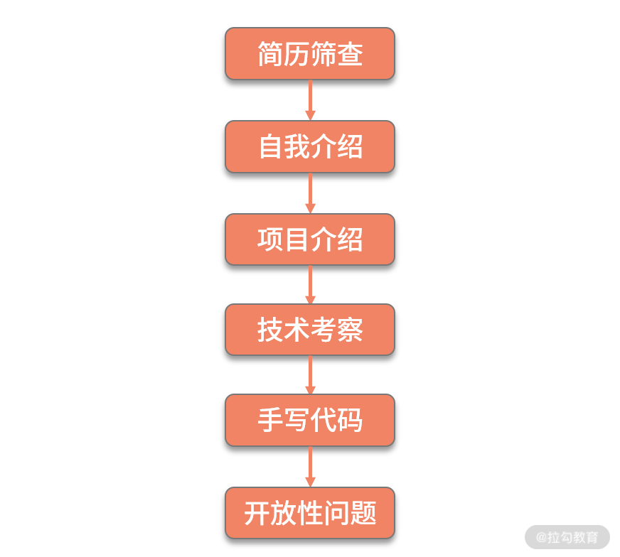
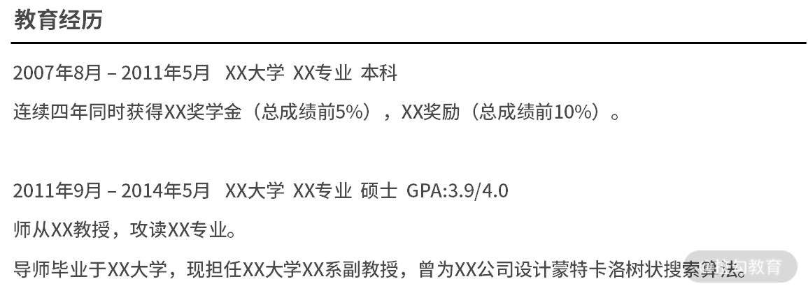

- 00 数据结构与算法，应该这样学！.md.html
- 01 复杂度：如何衡量程序运行的效率？.md.html
- 02 数据结构：将“昂贵”的时间复杂度转换成“廉价”的空间复杂度.md.html
- 03 增删查：掌握数据处理的基本操作,以不变应万变.md.html
- 04 如何完成线性表结构下的增删查？.md.html
- 05 栈：后进先出的线性表，如何实现增删查？.md.html
- 06 队列：先进先出的线性表，如何实现增删查？.md.html
- 07 数组：如何实现基于索引的查找？.md.html
- 08 字符串：如何正确回答面试中高频考察的字符串匹配算法？.md.html
- 09 树和二叉树：分支关系与层次结构下，如何有效实现增删查？.md.html
- 10 哈希表：如何利用好高效率查找的“利器”？.md.html
- 11 递归：如何利用递归求解汉诺塔问题？.md.html
- 12 分治：如何利用分治法完成数据查找？.md.html
- 13 排序：经典排序算法原理解析与优劣对比.md.html
- 14 动态规划：如何通过最优子结构，完成复杂问题求解？.md.html
- 15 定位问题才能更好地解决问题：开发前的复杂度分析与技术选型.md.html
- 16 真题案例（一）：算法思维训练.md.html
- 17 真题案例（二）：数据结构训练.md.html
- 18 真题案例（三）：力扣真题训练.md.html
- 19 真题案例（四）：大厂真题实战演练.md.html
- 20 代码之外，技术面试中你应该具备哪些软素质？.md.html
- 21 面试中如何建立全局观，快速完成优质的手写代码？.md.html
- 加餐 课后练习题详解.md.html
20 代码之外，技术面试中你应该具备哪些软素质？
前面课时中，我们完成了这个专栏覆盖的专业知识（也就是硬素质）的学习。最后两个课时，是这个专栏的特别放送。我们会聚焦在面试的场景，看一下在面试过程中如何运用所学知识，并结合一定的软素质技巧，来拿到心仪的 offer。本课时，我们将围绕面试应该具备的软素质能力展开分析。
技术面试的流程
从本质来看，技术面试就是一次交流和讨论。你作为候选人一定不可以降低身份，表现出求着对方收留的那种感觉。面试很像是相亲，是一种双向选择的过程。如果交流下来，你不认可面试官，那么也可以重新寻找别的求职机会。
面试通过与否取决于面试官。在面试的过程中，你一直在动态地维护一个你在面试官心中好感度的得分。你在面试的过程中，不断地展现出你的优秀，那么这个好感分就会越来越高；反之，则会越来越低。最终，面试结束之后，面试官会根据心中的好感分来决定候选人的去留。
求职开始于简历，这是一个预面试的过程。只有简历通过了，才可能进入到面试环节。技术面试的时长在 60 分钟左右，一般可以拆解为自我介绍、项目介绍、技术考察、手写代码和开放性问题。因此，从流程来看，你必须在简历筛查、自我介绍、项目介绍、技术考察、手写代码和开放性问题，这六个环节都做到较好，才有机会通过面试。接下来，我们将对技术面试的涉及的 6 个环节逐一进行分析。

技术面试各个环节的能力分析
这里需要特别说明一下，以下分析只针对互联网大厂技术研发的求职。
简历筛查
先抛出结论。简历是第一印象，第一印象奠定了你在面试官心中的形象。其实，从简历就能看出候选人对问题的理解程度、大致的段位、求职预期、甚至是面试的结果。
举例而言，简历中如果写了政治面貌、户籍、3 年前获得的奖学金情况等信息，就能得到下面的结论，这个候选人眼界可能比较有限、对事情重要性的判断能力可能不足。原因在于，这些信息并不是你这次求职的加分项（虽然也不是减分项），但写在仅有一张纸篇幅的简历中，就显得信息很冗余了。
根据我的经验，好的简历要满足以下 3 个必要条件，分别是信息完备、抽象概括、重点突出。
- 信息完备，指的是必备的东西不能缺。例如，姓名、学历、联系方式、工作经历等。
- 抽象概括，指的是可有可无的东西不要写。例如，研究生的导师姓名（除非是院士级的）、政治面貌、户籍等。
- 重点突出，指的是对你有利的东西要放大加粗。例如，电话号、S 绩效、系统性能提高 50% 等。
自我介绍
如果你通过了简历的筛查，那么就会很快地收到面试邀请。在大部分面试中，第一个环节就是自我介绍。很多人会忽视自我介绍，但我想说的是，自我介绍是面试过程的第一个环节，也同样是奠定第一印象的环节，更是被很多候选人忽视的环节。
自我介绍建议时长控制在 5 分钟左右。你只需要介绍自己的基本情况就可以，不要太深入地介绍项目。尽量按时间顺序，从大学开始分阶段进行介绍，然后高度抽象总结出来，以 10 句话左右为限制。说的时候语速放慢、吐字清晰，注意抑扬顿挫。
在自我介绍的环节中，重点明明是介绍自己，但很多候选人却不知不觉地将自我介绍变成了项目介绍。不仅讲了项目的技术方案，还详细介绍了技术细节，最终啰里八嗦地说了十多分钟。面试官打断的话，候选人不开心，可能还会跑去脉脉吐槽说面试官不尊重人。面试官不打断的话，这样的自我介绍就是浪费彼此时间，最终的结果只有淘汰。
在准备面试前，你不妨做这样一个测试。首先，尝试给自己的父母做一遍自我介绍。然后，喝口水或者上个厕所。接着，过 10 分钟，再给自己的父母做一遍自我介绍。如果你两次自我介绍的内容、话术、吐字基本相同，那么说明你在自我介绍环节的准备已经很充分了。如果两次自我介绍的差距比较大，那么说明你的准备还很不充分。
讲到这里，我想到了曾经面试过的一个候选人，他当时带着一份自我介绍的稿子来参加面试。虽然有很强的背诵感，但我觉得这样的态度很好。因为他自我介绍的每块内容、每句话，都是他精挑细选、仔细打磨后的。这样的充分准备，至少让我觉得我们的沟通效率会很高。
项目介绍
项目介绍一般需要 25 分钟左右，包括候选人自己阐述项目核心内容，以及面试官就不明确的地方进行发问。同样，项目介绍也是很多人所忽视的内容。很多候选人会错误地认为，对于自己亲手做过的项目，细节都了如指掌。即使别人问非常细节的问题，也不必担心回答不出。这种观点大错特错。
的确，面试官会关注你过往项目的实现方法、技术细节，但他应该会更关注你项目背后的问题定位、目标定义、技术选型。简而言之，就是到底你遇到了什么问题，导致你用了这个方法做了这么一件事情。
根据我面试候选人的结果来看，很多底层的技术研发工程师都在瞎忙。说得讽刺一些，就好像是电影《国产凌凌漆》中的达文西一样。记得剧中的达文西曾经发明了一款太阳能手电筒。它的功能是，手电筒在有光的情况下就会亮，在没有光的时候就绝对不会亮。很显然，这是一件毫无用处的发明。工程师就像是一个系统的发明者。如果每天都是瞎忙的话，就很可能用了很酷炫的技术，做了一件毫无用处的事情。
关于项目介绍，我在这里给你提出 3 个问题，你可以结合自己以前的项目尝试回答。
问题 1：在项目中，你解决了什么问题？不解决会有什么后果？
这个问题想问的其实是 Why。候选人切记不可上来就说，我做了什么事情。正确的回答应该从问题出发。一定是公司遇到了某个必须解决的问题（系统问题、业务问题），最终导致你去做了什么对应的事情。
问题 2：这个问题的复杂性在哪里？你在解决它的过程中需要具备哪些能力？
这个问题想问的是 What。既然明确了问题，那么就要再进一步找到这个问题的关键点和复杂性。再以此，提炼出技术问题，寻找解决方案。
问题 3：这个问题被你解决了多少？你取得了哪些业务收益？
这个问题想问的是 How，也是最终的结果。比如，如果有你没你都一样，那么这就是瞎忙的一个项目。如果有了你，使得公司每年节约了 XX 元的成本，那这就是你真实取得的业务收益。
下面我们举一个例子，利用上面提出的 3 个问题，去帮助求职搬砖工王大壮写一份项目经历。假设王大壮以前在某个工地上搬砖，他的项目介绍可以这样描述：
- 首先他要解决的问题是，盖楼必须有足够的砖头。如果没有砖头，楼无法按期交付，导致开发商赔偿违约金。
- 复杂性在于，搬砖必须要有足够的体力，身体素质要好。王大壮身体壮、力气大，每趟能搬 20 块砖（普通人 14 块），超过普通人 50%。
- 最终的结果是，王大壮完成搬砖 100 趟，盖大楼用到的砖有 10% 是王大壮搬的。楼盘建设期间，在砖头供应上未发生缺口。
技术考察
技术考察一般持续 15 分钟左右，考核的是你的专业知识和专业经验。例如设计模式、数据结构、机器学习或 AI 技术。考察的重点会根据不同的目标岗位而有所不同。不管怎样，至少你需要在技术深度上，达到一般水平。
手写代码
手写代码一般就是 1～2 个题目，持续时间大约 10 分钟左右。我们这个专栏就是在服务于这个环节。硬的基本功我们已经学了很多了，在这里我们也不再过多赘述。下一课时我会单独讲解一些关于手写代码的全局观问题。
开放性问题
其实开放性问题会隐藏在面试过程中的各个地方。当然，最集中的还是在面试最后的 5～10 分钟。开放性问题考核的是候选人的综合能力。例如，对行业的理解、对问题的分析、对观点的表达等等。
这个环节的评价非常主观，很难有对错之分。但我个人的建议是，别不懂装懂、别夸大其词、更别尝试去忽悠别人。尽可能给面试官留下踏实、理性、客观的印象，做到知之为知之、不知为不知。
技术面试的真实案例
下面我们给出几个真实案例，带你进一步分析和运用本课时所讲的内容。
反面案例 1：简历
【题目】 如下图所示，我们给出一段简历内容，要求你根据本课时学习到的知识，予以评价。

【分析】 不难发现，这段简历在简历 3 个要素上都出现了问题，具体分析如下：
首先，信息不完备。既然硕士阶段写了 GPA，本科阶段就应该写上与之对应的 GPA 或者加权平均分；或者统一都不写。
其次，信息冗余。师从 XX 教授，以及导师毕业于哪个大学，这些对你的求职又有什么用呢？写了也只是浪费纸张、浪费篇幅。
最后，重点信息不突出。总成绩 5%，这是非常好的名次，可以考虑加粗，让人一眼就看到。
再延伸一下。根据这个简历，可以初步判断出候选人做事情可能会丢三落四，对系统架构的设计缺少必备的审美，对事情重要性的判断能力欠缺。
反面案例 2：自我介绍
【题目】“您好，我叫郭靖，出生于 1992 年，今年 28 岁。2011 年在清华读的大学，专业是计算机，多次评为三好学生。毕业之后在中科院读了研究生， 2018 年毕业。毕业之后，曾在某公司工作。在该公司，我是在 xx 部门的产品组，从事策略产品经理，做了 xx 项目。在这个项目中，我们当时用了 xx 的方法。xx 方法的原理是 xx。业余时间，我喜欢唱、跳、篮球、rap。”
【分析】 这段自我介绍很乱，夹杂了很多信息。在自我介绍的环节中，只是向别人介绍自己曾在哪里做过什么事情，并不需要试图去论述自己技术多牛。所以，“这个项目中，我们当时用了 xx 的方法。xx 方法的原理是 xx”，这些都是不必要的内容。而且技术方法和原理，三言两语肯定讲不清楚，宝贵的时间就被这样浪费了。最后，业余时间的爱好，也是多余的。你求职岗位是工程师，你会不会唱歌跳舞打篮球，对你的求职并没有任何帮助。介绍这里，就显得很单纯可爱。
下面我给出一版调整之后的自我介绍，如下：
“您好，我叫 xx。09 年就读于 xx 大学，学的是 xx 专业。13 年毕业后，考研到了 xx 大学的 xx 专业，研究方向是 xx。16 年顺利毕业后，去了 xx公司，一直到现在。我所在的是 xx 部 xx 组，负责的是 xx 业务。这块业务的目标是 xx，我们在其中有 xx 人，先后实现了目标的百分之 xx。我个人在其中负责的是 xx 模块的策略产品，产出主要是为 xx 服务。我的大致情况是这样。”
总结
好的，本课时的内容就到这里了。今天我们讲到的软素质内容主要来源于我近年来面试他人的经历而形成的一些总结，很难有对错之分。你做到与否，影响的只是面试官对你的印象分和好感分，并不会直接影响面试的结果。真正影响面试结果的，还是你的技术硬实力和技术基本功，这永远都是你的盔甲。
练习题
下面我们给出一道练习题，帮助你巩固本课时讲解的一些面试思路和方法。
假设你现在在某个媒体公司工作，你们公司有一款新闻 App。你曾经的工作职责是，负责这款新闻 App 首页 feed 流的优化工作。你采用了深度学习模型做了用户画像，并采用协同过滤的方法做了个推荐系统。
你可以试着围绕本课时所讲的项目介绍的方法，去向你的朋友或父母介绍一下你的项目经历。重要的提示，你可以参考前面“项目介绍”部分提到的 3 个问题进行阐述：
- Why，这个系统不做会有什么后果？
- What，这个系统制作的复杂性在哪里？
- How，你做完之后的效果如何？
在实际的工作中，如果你还有其他关于面试过程中想知道的东西，欢迎给我留言。下一课时的内容是，“面试中如何建立全局观，快速完成优质的手写代码？”。